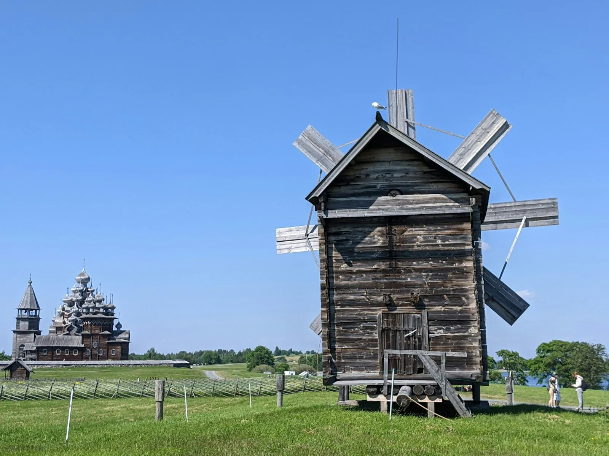
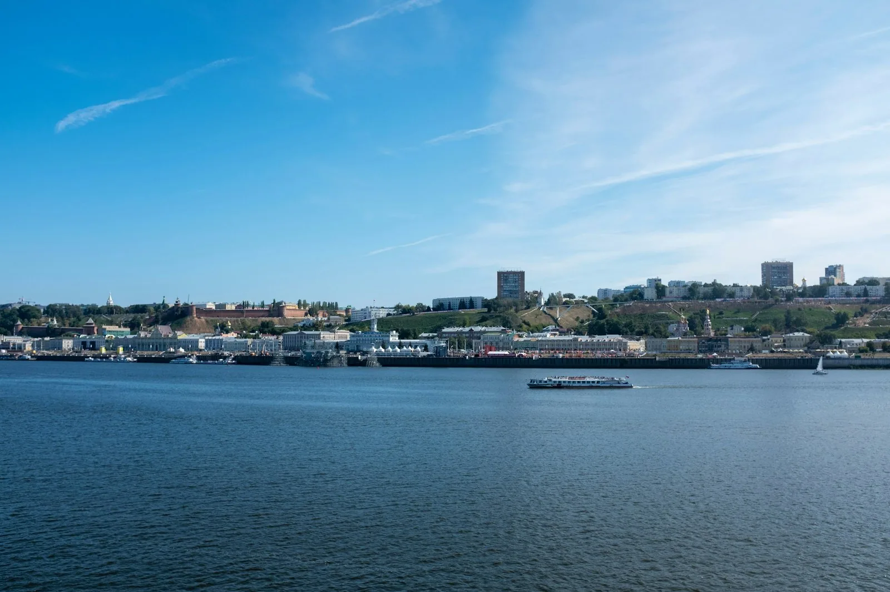

День 1≈60 км · 5–6 ч вело · 2 ч мото
Нижний — Кстово — стоянка на берегу
- км 0Набережная, выезд по велодорожке
- км 18Смотровая на откосе, первая остановка
- км 41Конец асфальта, дальше грунт вдоль воды
- км 60Ночёвка, родник в 200 м
Маршруты / Поволжье / Вдоль Волги до Макарьева
Маршрут · 2 дня · вело и мото
Два дня правым берегом: откосы, паромная переправа и монастырь, который видно с воды раньше, чем с дороги.
Старт удобнее с Нижневолжской набережной: до выезда из города полчаса по велодорожке. Финиш у монастыря, обратно автобусом или тем же паромом.




Поездка: август 2026 · текст и фото: Илья Сомов

Из города выехали в восемь, пока на набережной никого не было. До Кстово дорога скучная: обочина, фуры, заправки. Зато ровно, и первые сорок километров прошли быстрее, чем думали.
На сорок первом километре асфальт закончился сразу, без всякого предупреждения. Дальше грунтовка идёт вдоль берега, то поднимается на обрыв, то спускается почти к воде. После сухой недели она была твёрдая, но в низинах стояли лужи, и пару раз пришлось вести велосипед рядом.
Скорость упала вдвое. Мы перестали смотреть на часы и начали смотреть по сторонам. Наверное, ради этого участка маршрут и стоит ехать.
План: ночёвка у воды на км 45
Ветер с реки, палатку переставили на км 60. +1,5 часа.
Не повторяйтеошибка автора
День 2
Утром на берегу стоял туман, и палатка промокла насквозь, хотя дождя не было. Сушить не стали, свернули как есть.
До парома оставалось двенадцать километров. Приехали за десять минут до рейса и всё равно ждали сорок: паромщик ждал машину из села. Пока стояли, он рассказал, что велосипедистов летом бывает человек десять в неделю, а мотоциклистов больше.
С воды монастырь видно целиком, белые стены и купола над лесом. С дороги его закрывают деревья почти до самых ворот. Последние километры мы ехали молча и никуда не торопились.


На пароме работает один человек. Он продаёт билеты, швартует, следит за погодой и помнит почти всех, кто переправлялся здесь хотя бы дважды.
Николаю Петровичу шестьдесят четыре. На переправу он пришёл в девяностых, когда закрылся леспромхоз. Тогда паром ходил каждый час, а в селе жило шестьсот человек. Сейчас летом шесть рейсов в день, зимой переправы нет совсем, и село на том берегу живёт само по себе.
Велосипедистов он записывает в тетрадь. Говорит, лет десять назад их не было вовсе, а теперь каждое лето кто-нибудь спрашивает, где набрать воды и можно ли поставить палатку у причала. Можно, но лучше выше по склону: ночью от реки тянет холодом.
«Велосипед везу бесплатно. Человек сам доехал, своими ногами. За что с него брать?»
Николай Петрович, паромщик


Паром перешёл на осеннее расписание, последний рейс раньше. Успели впритык.

После дождей км 41–50 почти не проехать на узких шинах. Объезжала по деревне.

На стоянке у родника можно оставить велосипед на ночь под тентом или лучше в палатку?